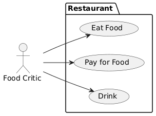

Register the plantuml knitr engine
The plantuml knitr engine plantuml_knit_engine() needs to be registered with knitr. The easiest is to use thew helper function plantuml_knit_engine_register in the setup code chunk. It is important to load the package plantuml before, as some options need to be set.
PlantUML Code Chunk Options
The following options are available, in addition to the standard options: - plantuml_format: the format of the resulting file. At the moment, png (the default), svg, and eps are implemented. - plantuml.path: the path at which the resulting graphs should be saved. If the directory does not exist, it will be created. - plantuml.preview: if the graph should be shown as an inline preview in the Rmarkdown document in Rstudio. This option results in generating the image twice, which may lead to a substantial increase of the processing time. The preview is always a vector preview, irrespective of the file plantuml_format

A simple chart as png and with code
left to right direction
actor "Food Critic" as fc
package Restaurant {
usecase "Eat Food" as UC1
usecase "Pay for Food" as UC2
usecase "Drink" as UC3
}
fc --> UC1
fc --> UC2
fc --> UC3